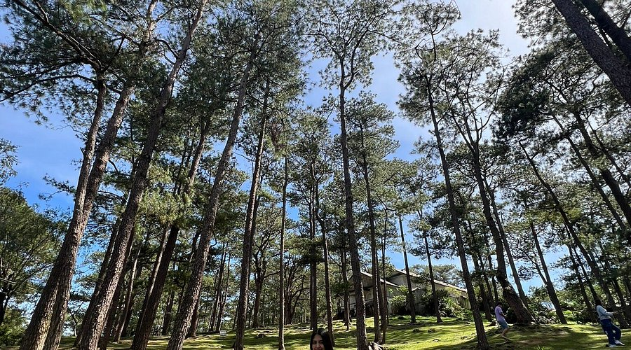
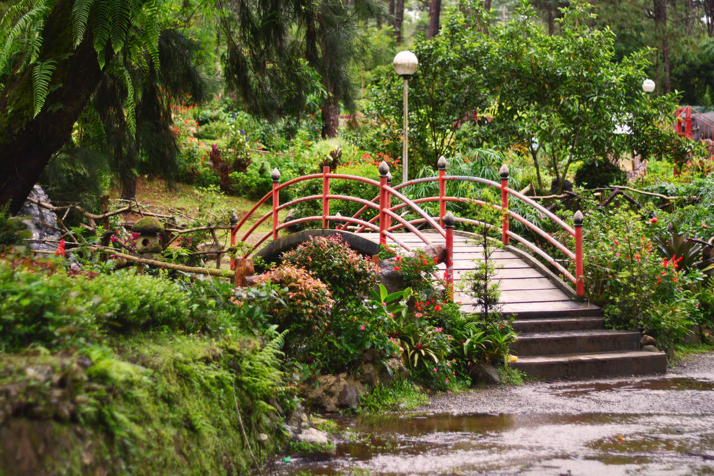

Welcome
Welcome to my travel page! This simple website highlights one of my favorite destinations in the Philippines. Explore its tourist attractions, food, and how to reach the city.
Top Attractions
-
Burnham Park
Burnham Park, officially known as the Burnham Park Reservation, is a historic urban park located in downtown Baguio, Philippines. It was designed by eponymous American architect and Baguio city planner, Daniel Burnham.
-
Mines View Park
Mines View Park is one of the famous tourist spots across Baguio, packed with shops selling snacks, trinkets, botanical items, and others. Picture-taking services with traditional Igorot clothes, horses, dogs, and more are also available in the lower half of the park. The park also overlooks nearby mountains, forests, and Itogon's abandoned mines.
-
Camp John Hay
Camp John Hay is a renowned mountain retreat in Baguio City. Built about 5000 feet above sea level, averaging a moderate temperature of 19 degree Celsius. In addition to hotels, shopping and conference centers in the city, it is visited mainly because of its world-class Jack Nicklaus-designed golf course.

-
Botanical Garden
The Baguio Botanical Garden is a lush, tranquil attraction in the heart of Baguio City, Philippines, spanning over 8 hectares and featuring a wide array of local and national flora. It is known for its greenery and offers a pleasant environment for visitors, with easy access via jeepney or taxi from the city center. The garden provides a peaceful retreat for enjoying diverse plant life and is a popular stop for both locals and tourists.



Famous Local Food
Baguio is known for its strawberries, ube jam, and fresh vegetables. Visitors often enjoy local treats at the Baguio Public Market and night markets.
Contact Information
For more information, visit: Baguio City Official Website
Email: info@baguio-tourism.ph